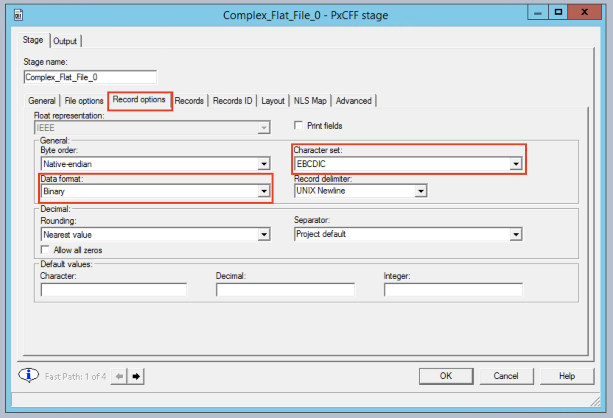

Lab: Transform EBCIDIC data to CSV with COBOL Copybook¶
IBM DataStage Flow Designer allows you to read data from a mainframe. More specifically, you can specify inputs in your DataStage job to be in EBCIDIC format and to import COBOL copybooks as table definitions.
To keep things simple in this lab we're going to speak generally about mainframes and COBOL. Files from a mainframe are usually saved as binary files and sFTPed to some server where DataStage can access them. The binary files alone are not enough for DataStage to read the contents. A COBOL playbook is required to translate the data from binary to ascii. Both files are available here: https://github.com/IBM/datastage-standalone-workshop/tree/master/data/mainframe.
This lab consists of the following steps:
- Create job layout
- Add COBOL copybook as a table definition
- Customize the job
- Compile, run, view output
About the data¶
The example binary data should be downloaded to the server. Switch to the server and run:
cd /opt/IBM/InformationServer/Server/Projects/dstage1
wget https://raw.githubusercontent.com/IBM/datastage-standalone-workshop/master/data/mainframe/example.bin
The copybook can be downloaded to the client machine by going to the GitHub repo and saving the file to the desktop. The copybook we're using looks like this:
01 RECORD.
05 ID PIC S9(4) COMP.
05 COMPANY.
10 SHORT-NAME PIC X(10).
10 COMPANY-ID-NUM PIC 9(5) COMP-3.
10 COMPANY-ID-STR
05 METADATA.
10 CLIENTID PIC X(15).
10 REGISTRATION-NUM PIC X(10).
10 NUMBER-OF-ACCTS PIC 9(03) COMP-3.
Before you start: Launching DataStage Flow Designer¶
Before we start the lab, let's switch to the iis-client VM and launch Firefox.
Launch the desktop client by going to the start menu and searching for DataStage Designer.
1. Create job layout¶
Start a new Parallel Job project and create a job that looks like the image below. Remember to wire the elements together. It should have:
- 1 x Complex Flat File
- 1 x Peek
- 1 X Sequential File
2. Add COBOL copybook as a table definition¶
In the toolbar click on Import > Table Definitions > COBOL File Definitions.
Specify the downloaded copybook file and click Import.
You have just imported your copybook definitions!
3. Customize the job¶
The first step is to double click on the Complex Flat File node, go to the File options tab, and specify the example binary file as the input. Critically, we must specify Fixed block as the record type.
Go to the Record options tab and choose the Binary data format and EBCDIC as the character set.

Go to the Records tab and click the Load button, this will give us the option to specify a copybook.
Choose to use on the copybook that was imported in the previous step.
Select the >> icon to use all fields from the copybook.
The Records tab should now show the various column names from the copybook.
Double clicking on the Peek node allows us to map output from the Complex Flat File. Click on the Output section and choose the Columns tab.
Enter the following new columns:
- ID
- SHORT_NAME
- CLIENTID
- COMPANY_ID_NUM
- COMPANY_ID_STR
- REGISTRATION_NUM
- NUMBER_OF_ACCTS
- ACCOUNT_NUMBER
- ACCOUNT_TYPE_X
Still in the Output section now click on the Mapping tab and choose to Auto-Match.
Double clicking on the Sequential File node brings up a single option. To specify a filename, choose mainframe.csv for example.
4. Compile, run, view output¶
Compile and run the job using the usual icons from the toolbar.
After running the job you can view the output from the Designer tool by clicking on the Sequential File node and clicking the View Data button. Click OK on the next dialog.
You'll be able to see one row of data with an ID, SHORT_NAME and a few other fields.
The output file is also written to the server. Switch to the server VM by clicking the first icon on the Environment VMs panel and selecting iis-server. Login as the root user with the password inf0Xerver.

Change your direcotory using cd to the location where you had stored the file.
cd /opt/IBM/InformationServer/Server/Projects/<project-name>/
Finally, output your results using the cat command.
cat mainframe.csv
CONGRATULATIONS!! You have completed this lab!